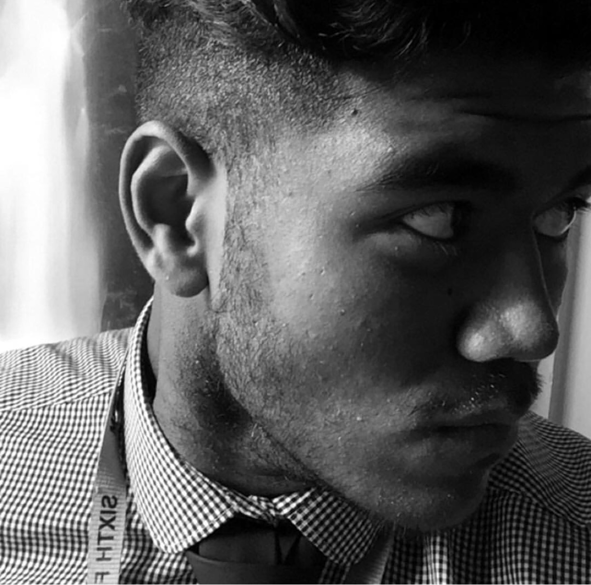

CV
Allie Cornelius
Personal Profile
I am an individual with high levels of motivation and professionalism. Leaving my comfort zone is something that I feel is a challenge to me and I am always one to overcome challenges that I am faced with. In order to do this I will devise suitable solutions
by thinking creatively and widely, as well as considering all factors to ensure that the challenge is overcome correctly and efficiently. I will always set myself new goals in order to better myself as an individual.

Education
- University of Northampton - BEng Computer Network Engineering - September 2016 - Present
- The Heathland School - GCSE's and A-Levels - September 2009 - 2016
Experience
Whilst working at The Heathland School (Jun 2016 - September 2016) I had been working alongside the Network Department. From this I gained vital knowledge and skills such as binary calculation and the foundations of network management. I had also undergone
training in IT support as well as network support. Throughout this working period I also began to install servers as well as re-imaging clients to the central server.
Skills
HTML and CSS Languages